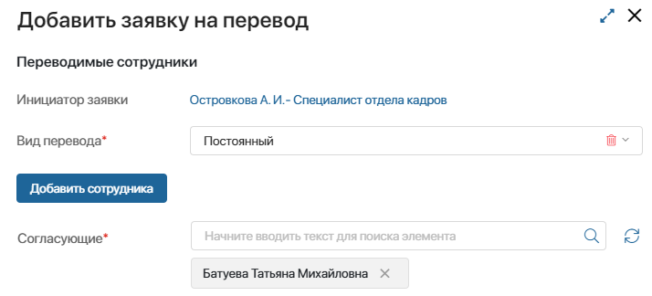
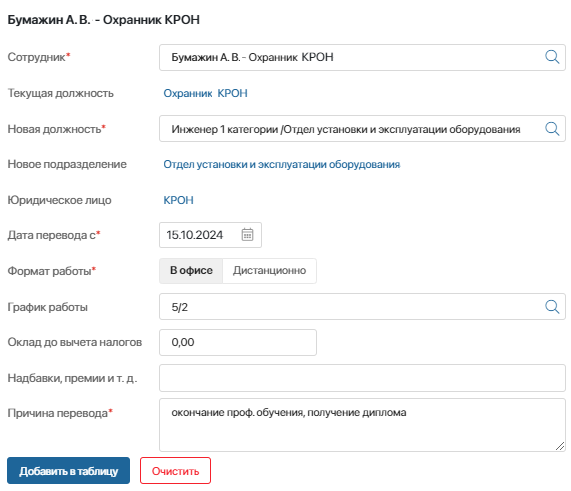
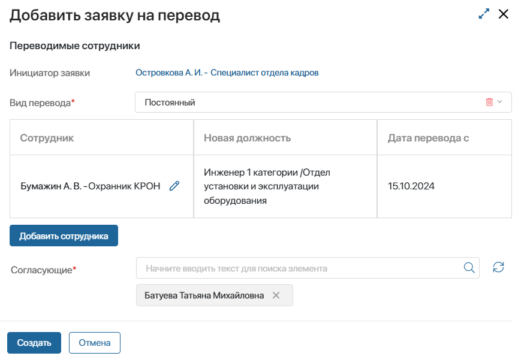
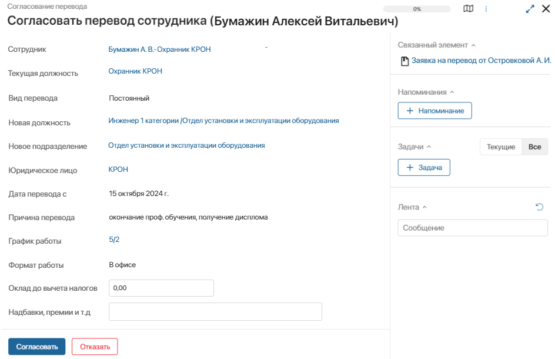

В ELMA365 КЭДО 3.0 можно создать заявку о переводе сотрудника на другую должность по штатному расписанию. После этого запустится процесс перевода на другую должность.
Обратите внимание, перевод сотрудника в рамках должностей управленческой структуры не предусмотрен в преднастроенных процессах.
Цель процесса |
Согласовать перевод сотрудника, оформить документы на перевод. |
Результат процесса |
|
Участники процесса |
|
Процесс перевода на другую должность состоит из следующих этапов:
- Создание заявки на перевод сотрудника.
- Согласование заявки на перевод сотрудника.
- Ознакомление сотрудника с ЛНА по новой должности.
- Создание и подписание соглашения о переводе.
- Контроль окончания временного перевода.
Сотрудник, для которых оформляется перевод, и согласующий заявку на перевод, участвуют в процессе, используя Портал КЭДО. Специалист отдела кадров и подписант могут работать как в разделах интерфейса ELMA365, так и на портале КЭДО.
Создание заявки на перевод сотрудника
Запустить процесс своего перевода на другую должность может любой сотрудник, создав заявку на портале КЭДО.
Также руководитель может создать заявку на перевод своих подчинённых, а специалист отдела кадров — на перевод любого сотрудника организации.
Чтобы запустить процесс перевода в разделе КЭДО 3.0:
- Перейдите в приложение Заявки на перевод и в правом верхнем углу страницы нажмите + Заявка на перевод.
- В открывшемся окне выберите вид перевода:
- Постоянный;
- Временный — используйте этот вариант, если дата окончания периода временного перевода определена;
- Временный (дата окончания неизвестна).
- В поле Согласующие* по умолчанию указан руководитель инициатора заявки. Вы можете выбрать другого сотрудника или задать несколько согласующих. Например, можно указать текущего и нового руководителя переводимого сотрудника.

- Нажмите кнопку Добавить сотрудника. После этого на форме заявки отобразится блок Переводимый сотрудник для заполнения.
- В блоке Переводимый сотрудник укажите следующие данные:

- Сотрудник* — выберите сотрудника, переводимого на другую должность;
- Текущая должность — поле заполнится автоматически после выбора сотрудника;
- Новая должность* — выберите должность, на которую переводится сотрудник. Доступны элементы приложения Должности ШР;
- Новое подразделение, Юридическое лицо — поля заполнятся автоматически после выбора новой должности. Значения будут получены из её карточки в приложении Должности ШР;
- Дата перевода с* — укажите, с какой даты сотрудник приступает к работе на новой должности;
- Дата перевода по* — это поле отобразится, если выбран вид перевода Временный. Укажите дату, когда сотрудник завершит работу на новой должности;
- Формат работы* — выберите вариант В офисе или Дистанционно;
- График работы — выберите элемент справочника Графики работы;
- Оклад до вычета налогов — введите сумму оклада. Вы можете оставить поле пустым. Тогда в ходе процесса его заполнит согласующий или специалист отдела кадров;
- Надбавки, премии и т. д. — опишите дополнительные выплаты, которые предусмотрены на новой должности. Это поле также можно оставить для заполнения согласующим или специалистом отдела кадров;
- Причина перевода* — укажите основание для перевода сотрудника;
- Дата напоминания — это поле отобразится, если выбран вид перевода Временный (дата окончания неизвестна). Укажите дату, когда специалисту отдела кадров поступит задача проверить срок окончания временного перевода и указать его дату.
- Нажмите кнопку Добавить в таблицу, чтобы внести в заявку данные сотрудника.

- Вы можете добавить несколько переводимых сотрудников в заявку. Чтобы завершить создание заявки, нажмите Создать.
Созданные заявки сохраняются в приложении Заявки на перевод раздела КЭДО 3.0.
Если переводимый сотрудник не является инициатором процесса, ему поступит задача Подтвердить перевод на новую должность. В случае отказа инициатор получит задачу Принять решение об отказе от перевода и может отменить заявку или повторно направить её переводимому сотруднику.
Согласование заявки на перевод сотрудника
Согласующий, указанный в заявке, получает задачу Согласовать перевод сотрудника. В ней указаны данные, заполненные при создании заявки. Согласующий может указать в задаче сумму оклада и информацию о надбавках.

Если задано несколько согласующих, параллельно каждый из них получает задачу согласовать заявку.
Если в заявке указано несколько переводимых сотрудников, по каждому из них формируется отдельная задача согласовать перевод.
Дальнейший ход процесса перевода зависит от резолюции согласующего:
- Согласовать — в случае одобрения заявки всеми согласующими параллельно выполняются ветви процесса:
- ознакомление сотрудника с ЛНА по новой должности;
- создание соглашения о переводе и подписание его со стороны организации, т. е. подписантом;
- Отказать — если хотя бы один согласующий отклонил заявку, её инициатору поступит задача Принять решение об отказе от согласования перевода. Он может повторно направить заявку на согласование либо отменить заявку и завершить процесс.
Если заявка содержит несколько переводимых сотрудников, по каждому их них сформируется отдельная задача согласовать перевод. В случае отказа и отмены заявки по одному сотруднику он удаляется из списка в общей заявке и процесс продолжается по остальным переводимым сотрудникам.
Ознакомление сотрудника с ЛНА по новой должности
На этом этапе переводимый сотрудник получает задачу ознакомиться с комплектом документов, которые заданы для его новой должности и нового подразделения в приложениях Документы ЛНА и Приказы ЛНА раздела КЭДО 3.0. Например, должностная инструкция, положение об оплате труда и другие документы для работы на новой должности. Задача содержит те документы, с которыми сотрудник не был ознакомлен ранее.
Листы ознакомления с локальными нормативными актами сохраняются в разделе КЭДО 3.0.
Создание и подписание соглашения о переводе
После согласования заявки на перевод:
- Специалист отдела кадров получает задачу Внести данные для ДС: Заявка на перевод. Он указывает номер и дату соглашения для дальнейшей генерации документа. Если на предыдущих этапах не были внесены данные по окладу и надбавкам соответствующие поля отобразятся в задаче, их нужно заполнить.
- На основе внесённых данных генерируется файл соглашения о переводе сотрудника на основе шаблона. Созданные соглашения сохраняются в приложении Соглашения на перевод раздела КЭДО 3.0.
- Подписант со стороны организации получает задачу подписать документ. В задаче можно просмотреть файл соглашения и заявку инициатора.
- После ознакомления с ЛНА и подписания соглашения со стороны организации переводимый сотрудник получает задачу подписать соглашение о переводе.
- После подписания соглашения с обеих сторон (подписантом и сотрудником) перевод автоматически выполняется в установленную дату перевода. Процесс постоянного перевода на другую должность завершается.
Контроль окончания временного перевода
Когда заканчивается период временного перевода на другую должность:
- Если в заявке задана дата напоминания о переводе, в эту дату специалист отдела кадров получит задачу проверить время окончания перевода. Он может подтвердить дату окончания перевода или установить новую дату напоминания.
- Если дата окончания задана в заявке или подтверждена на предыдущем шаге, за три дня до её наступления формируется задача ознакомиться с окончанием временного перевода. Задачу получат как переведённый сотрудник, так и его руководители на временно занимаемой должности и основной.
- В дату окончания перевода автоматически актуализируются штатное расписание по организации. После этого процесс временного перевода завершается.